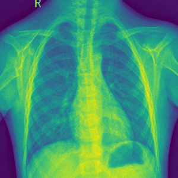

Here you can view several projects that I have been working on. I try to cover a lot of areas of Artificial Intelligence as well as different subjects.
The main idea of this section is to be demonstrative as well as educational. In every project you can find the code and an educational description of the whole process.
Also apart from the project being shown I will try to incorporate in each project usefull libraries that can help you in each of your own projects.
Credit Card Fraud Detection
5 minute read
Demonstration of the typical machine learning process when you analaze a dataset. It involves preprocessing, visualisation, then I compare some simple models
and use Area Under ROC curve to deside which model is the best. Then by using the best model I inspect the predictions on the fraud class, to see if there are any patterns that we can use
to improve our model.
Pneumonia Detection
5 minute read

In this project I explore the Pneumonia dataset from Kaggle. This dataset contains X-Ray's from healty patients and from patients with viral or bacterial
pneumonia. I develop 2 Convolutional Neural Networks, where the first detects if the person is healthy or with pneumonia and the second one detects if the patient has viral or bacterial
pneumonia. Then I display the synaptic weigths of the last convolutional layers to make is more explainable, in terms of what area of the image affected the CNN more. The code that I used in this
projects is in my github, I made 2 seperate developments; one in Pytorch and one in Tensorflow, so you can use the one that suits you more.